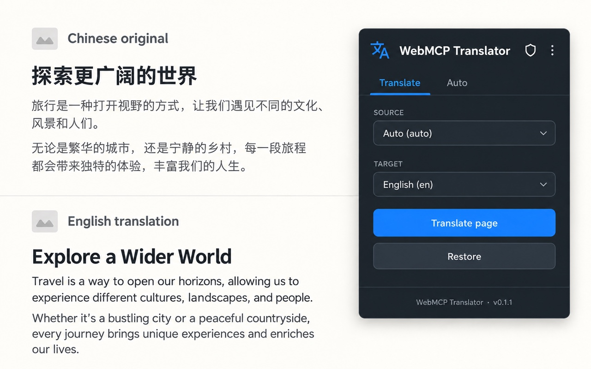
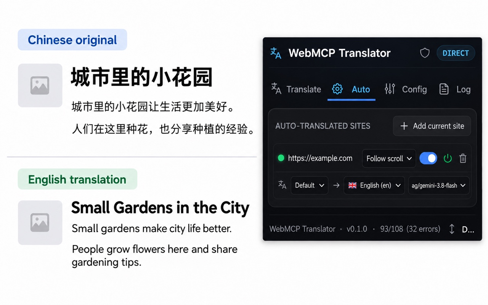
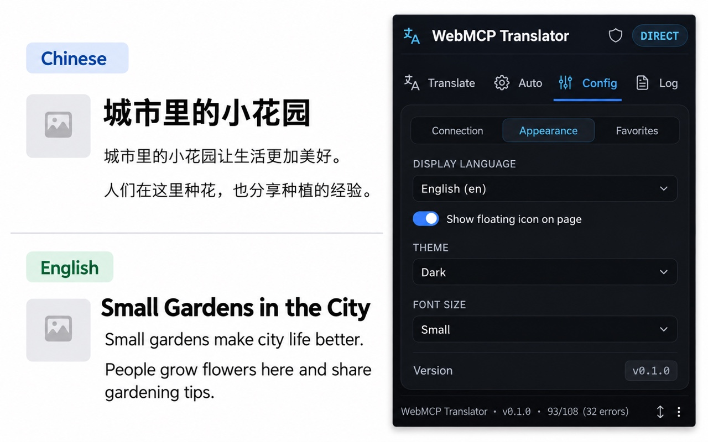
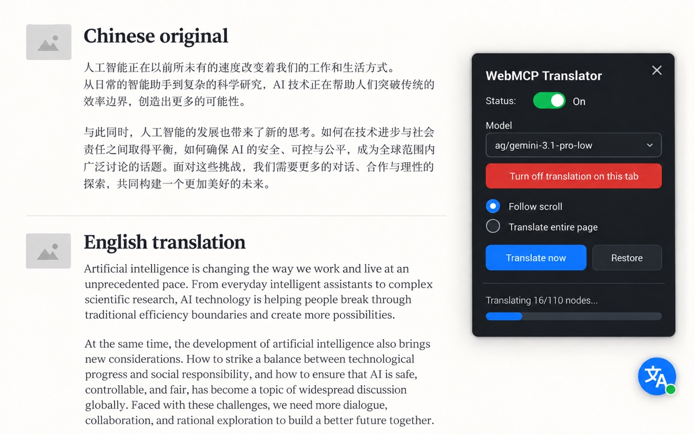

01
Page text
Eligible visible text selected for translation is sent with translation instructions, language choices, and the model name to your configured endpoint. Text in form controls, password fields, and editable areas is skipped.
WebMCP Translator Kit Privacy policy
When you translate a page, the extension sends eligible page text to the AI endpoint you configure. That service may pass it to an upstream model provider under its own terms.
At a glance
Translation is initiated for a site you enable or when you request a translation. Page text can contain personal or sensitive information, so choose pages and providers carefully.
Eligible visible text selected for translation is sent with translation instructions, language choices, and the model name to your configured endpoint. Text in form controls, password fields, and editable areas is skipped.
Your Base URL, model, language and site preferences, and API keys are stored in Chrome extension storage on your device. The selected key is sent to its configured endpoint in an authorization header.
When enabled, source and translated text may be cached locally for up to 7 days, with a 2.5 MiB size cap. Older entries can be evicted earlier. You can turn caching off in Config.
The route is yours to choose
WebMCP Translator Kit does not operate an intermediary translation server. Translation requests go directly from the extension to the Base URL you set. If that endpoint uses an upstream AI provider, the provider may also process the request under its own privacy terms.
The developer does not receive translation text or API keys through a WebMCP-operated backend.
A look at the interface
These illustrative previews show the extension in use. The privacy details above describe what happens to page text and credentials.




Illustrative interface previews. Controls and appearance may vary by extension version.
The details
The extension reads eligible text nodes from a webpage when you request translation or have enabled translation for that site. It avoids form inputs, password fields, editable content, hidden elements, and the extension's own widget. Page text may still include personal, financial, health, or private information.
To support translation across websites, the manifest declares host access for HTTP and HTTPS pages and the packaged content script is injected on those pages. Chrome may show this broad host access during installation. Injection alone does not send page text: eligible text is read only when you start a translation or have enabled auto-translation for that site.
Translation requests include the selected text, source and target language instructions, the model name, and request identifiers used to match results to page passages. Model discovery requests go to the Base URL you configure and use its API key.
Before the first model lookup or translation, the extension asks you to review its data-use disclosure and choose Agree or Decline. Agree is stored in the extension settings for this browser profile. If you decline, or later revoke consent in the extension, new model and translation requests are blocked. Existing requests are cancelled as the revocation is applied.
The disclosure describes page text and language/model instructions sent to your configured endpoint, possible forwarding by that endpoint, use of API keys in authorization headers, local cache behavior, broad HTTP/HTTPS script access, and the limits of loopback HTTP. The extension shows the disclosure again when its data-use version changes.
The endpoint operator at your configured Base URL receives the translation request and the API key for that endpoint. If you configure a fallback and it is used, the text and its corresponding fallback key are sent to that fallback endpoint. The endpoint operator may use another AI or hosting provider. Review those providers' terms and privacy practices before connecting them.
The extension publisher does not receive the page text or API keys through an extension-owned server. The extension does not include advertising or analytics code.
Settings, enabled-site preferences, endpoint configuration, and API keys are stored in Chrome's local extension storage for your browser profile. The extension limits key access to trusted extension contexts; it does not claim to encrypt these values itself.
Configuration export is user initiated. Its option to include API keys is enabled by default until you change it, so review that setting and the downloaded file before sharing an export.
If translation caching is enabled, source and translated text may remain in the local cache for up to 7 days and within a 2.5 MiB cap. Entries may be removed sooner to make room. Temporary tab state, rate-limit state, and operational diagnostics use Chrome session storage and are cleared with the browser session.
Retention by your configured endpoint or any upstream provider is controlled by those services, not by the extension publisher. Check their policies and configuration for details.
Choose which sites are enabled for automatic translation, turn off auto-translation for a site, decline or revoke data consent, remove saved keys in the Connect settings, and disable translation caching in Config. You can also revoke Chrome site access. Uninstalling the extension removes its Chrome extension storage for that profile.
Turning caching off prevents new translation results from being added to the cache. Existing entries expire within 7 days or may be evicted earlier. Data already sent to an endpoint must be handled through that provider's deletion and retention controls.
Version 0.1.1 requires HTTPS for remote endpoints and blocks remote HTTP before sending page text or API keys. HTTP is allowed only for loopback addresses on this device, such as 127.0.0.1 or localhost; loopback HTTP is not protected by TLS. Redirects from configured endpoints are rejected rather than followed.
This page will be updated when the extension's data practices change. The date at the top identifies the latest revision. This static GitHub Pages site adds no cookies or analytics. GitHub may process ordinary connection metadata when you visit under the GitHub Privacy Statement.
Privacy questions
Contact the project through GitHub Issues. Please do not post webpage text, API keys, or other sensitive information in a public issue.